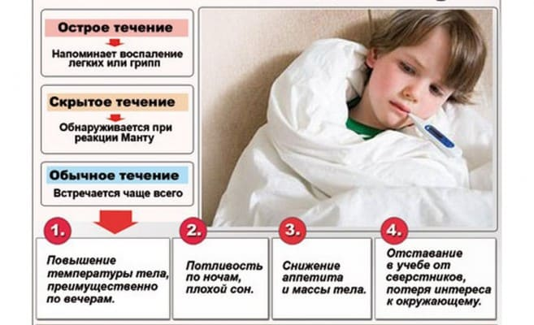
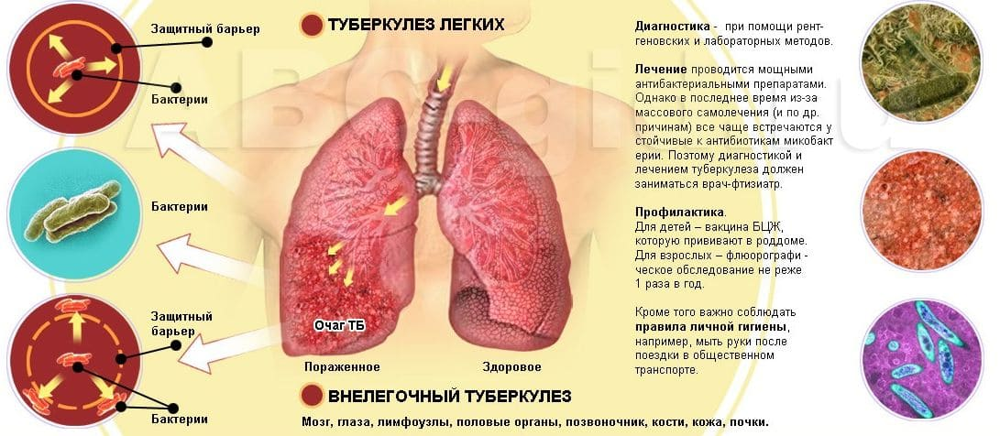
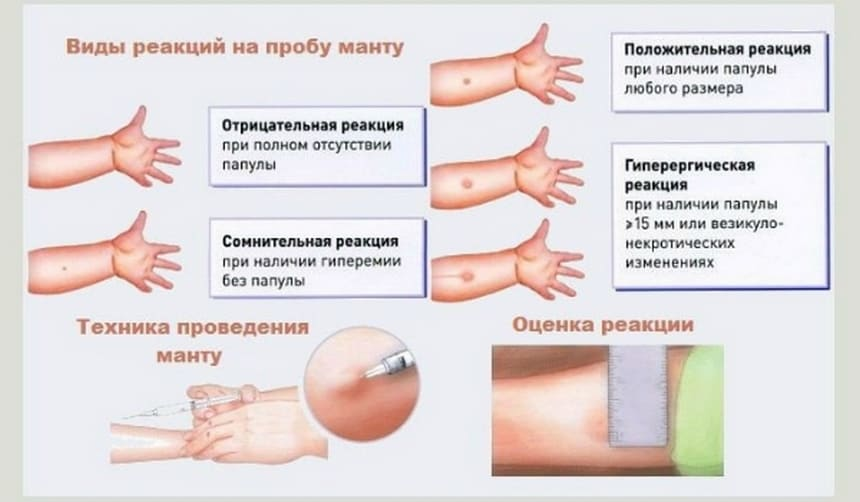
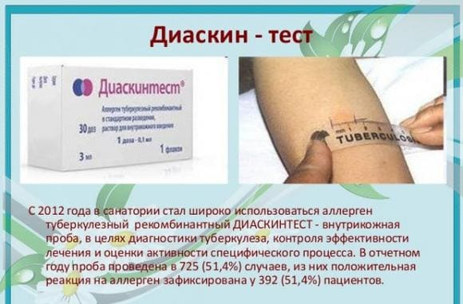
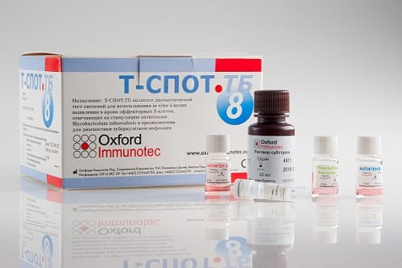
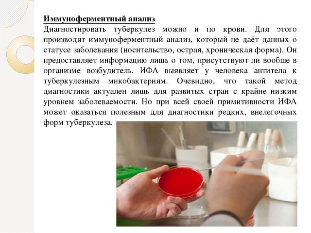

Россия – крайне неблагополучная страна по туберкулезу и один из крупнейших очагов этого заболевания на планете. Это грустный, но достоверный факт.

Живя в России, никто не может считать себя в безопасности от заражения туберкулезом. Да, высокий уровень достатка и хорошие навыки гигиены снижают этот риск, но вовсе не до нуля. Чтобы это осознать, можно привести пример со вшами: как бы часто вы ни мыли вашего ребенка, в какую бы элитную школу вы его ни отдали, риск заражения вшами все равно не нулевой. Всегда есть шанс, что кто-то заболеет и в школе заразит вашего ребенка. При этом педикулез весьма очевидная и простая болезнь, как в скрининге и диагностике, так и в лечении. С туберкулезом все гораздо сложнее, при этом выявить его хотелось бы до тяжелых форм, грубых и очевидных симптомов, до осложнений.

Какое мое личное мнение о пробе Манту? Я в разные годы дважды вынужден был обратиться со своим ребенком к фтизиатру, так как она была положительной, и дважды туберкулез не подтвердился.
И даже после этого я считаю, что пробы Манту следует проводить детям ежегодно, именно так, как рекомендуют российские руководства. Потому что лучше «перебдеть», чем пропустить опасную болезнь. Потому что даже среди очень обеспеченных людей я регулярно вижу туберкулез: у родителей, у детей, у ближайших родственников. А когда работал участковым педиатром и мог наблюдать малообеспеченные семьи, видел его в несколько раз чаще, и в более тяжелых формах.
Именно поэтому в России (в отличие от большинства других стран) введена поголовная вакцинация детей препаратом БЦЖм; она не идеальна, не защищает от заражения, зато эффективно предотвращает крайне тяжелые формы туберкулеза. Именно поэтому в России существуют программы ежегодного скрининга на туберкулез: пробы Манту и/или диаскинтест для детей, ежегодная флюорография для взрослых.
ПРОБА МАНТУ

Внутрикожный туберкулиновый тест (проба Манту) имеет два больших преимущества:
✗ невысокую стоимость;
✗высокую чувствительность – очень редко он бывает отрицательным, когда человек болен туберкулезом;
и один большой недостаток
✗ низкую специфичность – часто бывает положительным у здоровых людей.
Этот недостаток часто является ложкой дегтя: ложноположительные результаты приводят к обязательным визитам к фтизиатру (ребенка по закону имеют право не допускать к посещению детского сада или обучению в школе, если после положительной пробы Манту семья не предоставит заключение «Здоров» от фтизиатра). Родители вынуждены вести ребенка к фтизиатру против своей воли, получают там заключение «Здоров», теряют доверие к пробе Манту и начинают отказываться от нее, как от неэффективной. Добавьте сюда антипрививочную риторику, которой, как ядом, пропитан почти весь русскоязычный интернет и телевидение, и вы поймете, почему проба Манту встречает столько недоверия и сопротивления у российских родителей.
ДИАСКИНТЕСТ

Диаскинтест – это, если по-простому, улучшенная проба Манту. Проводится он также в виде внутрикожной пробы. Используется только в России (отечественная разработка), и теоретически предназначен для того, чтобы не путать реакцию на вакцинный штамм микобактерии туберкулеза с реакцией на дикий штамм (истинным заражением). С марта 2017 года детям школьного возраста следует проводить ежегодный скрининг на туберкулез не с помощью пробы Манту, а с помощью диаскинтеста. Реальная эффективность лично мне непонятна, сравнительных исследований не видел. Но в целом склонен ему доверять в той же мере, что и пробе Манту.
Итак, в России существует ежегодный скрининг детей на туберкулез, он не идеален (часто бывает ложноположительным), но в целом очень полезен и оправдан, отказываться от него не стоит. А если все же решили отказаться, то что? Есть ли альтернативы? Что грозит тем, кто откажется?
Эти вопросы беспокоят и родителей, и врачей: насколько альтернативы:
а) правомерны с точки зрения закона РФ?
б) надежны с точки зрения доказательной медицины?
АЛЬТЕРНАТИВЫ
Достаточно надежными альтернативами кожным пробам являются:
1) ежегодная рентгенография легких (исключает только легочный туберкулез, и то не очень надежно; добавляет лучевой нагрузки, но в целом является недорогим и приемлемым скринингом);
2) квантифероновый тест (Quanti-FERON®-TB Gold) – анализ крови, являющийся золотым стандартом ранней диагностики туберкулеза во всем мире. Весьма дорог (6-10 тысяч рублей) и временно пропал в России (проходит перерегистрацию, кажется);
3) T-SPOT тест (T-SPOT.TB) Родной брат квантиферонового теста, тоже золотой стандарт, та же ценовая категория. Доступен в РФ в некоторых сетевых лабораториях. Дорого, но если позиция против кожных проб у родителей принципиальная, вполне может служить альтернативой, более того, он точнее, чувствительнее и специфичнее, чем кожные пробы. Повсеместно по ОМС не может быть введен только по причине огромной стоимости (в масштабах страны).

НЕДОСТАТОЧНО надежными и потому запрещенными для скрининга являются:
4) иммуноферментный анализ (ИФА) крови на туберкулез;

5) анализ крови, мокроты, мочи и т. д. на туберкулез на основе ПЦР (полимеразной цепной реакции).
Всё. Других альтернатив скрининга не существует.
Законодательно эти альтернативы закреплены в этом документе: «Клинические рекомендации "Выявление и диагностика туберкулеза у детей, поступающих и обучающихся в образовательных организациях"».
Всем (и коллегам, и родителям), желающим более подробно ознакомиться с российскими стандартами скрининга на туберкулез и множеством «особых случаев», возникающих вокруг них, настоятельно рекомендую нагуглить и прочесть документ целиком. Он небольшой и вполне приличный, заслуживает вашего внимания.
Пожалуйста, не отказывайтесь от скрининга на туберкулез, он проводится не для галочки, это действительно необходимо.
(Сергей Бутрий "Здоровье ребенка: современный подход")